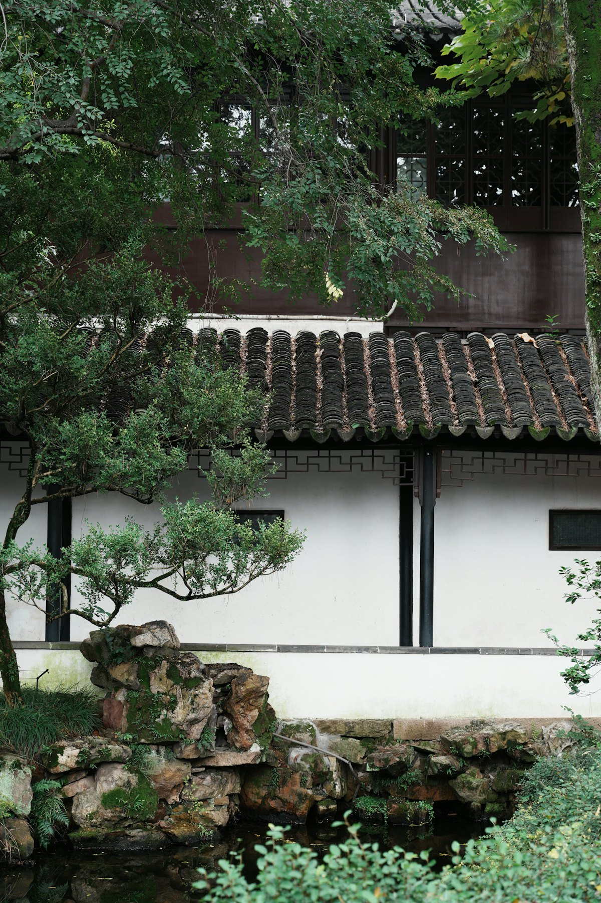
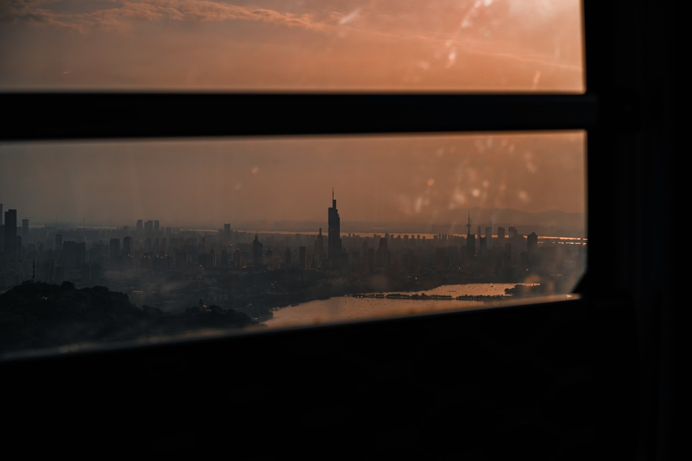
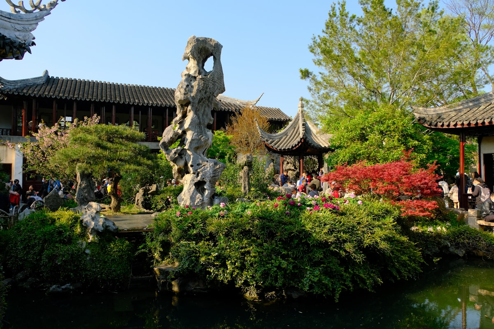
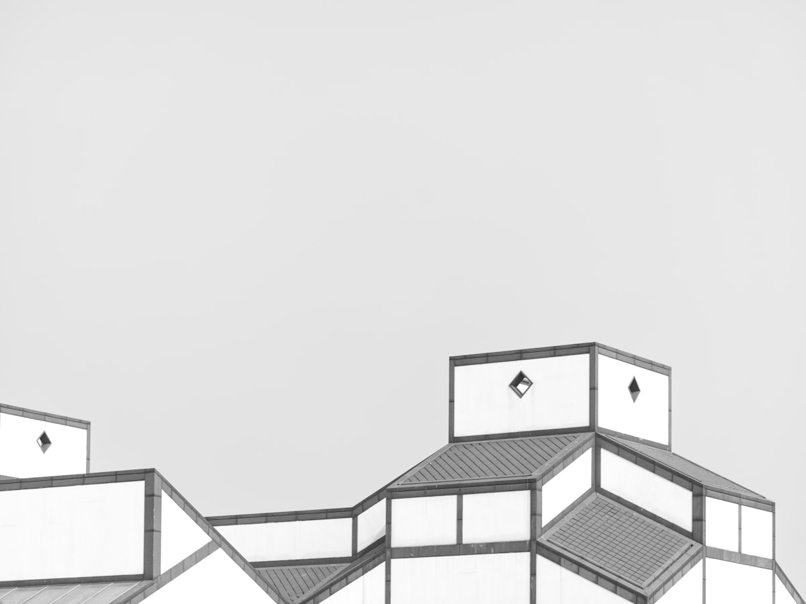
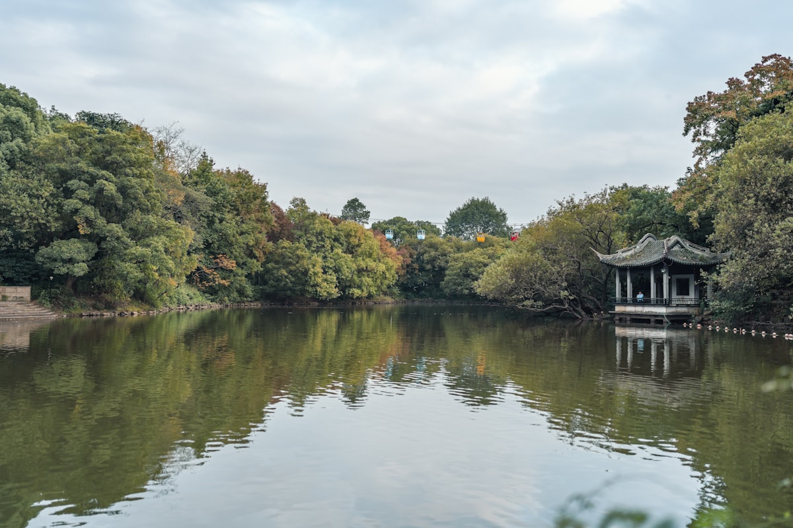
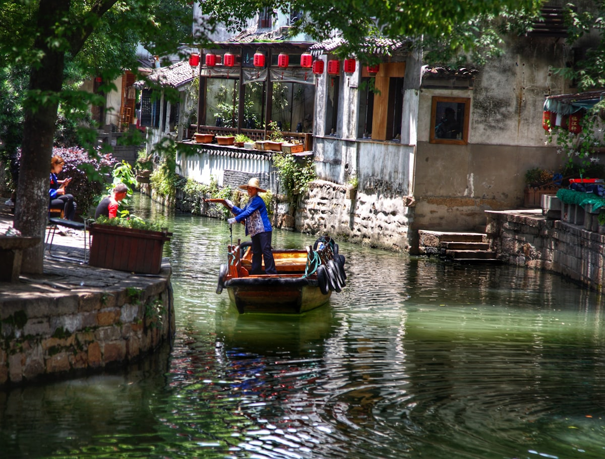

| 事项 | 结论 |
|---|---|
| 事项 | 结论 |
| 推荐方案 | 10 天 9 晚（南京 3 天 + 苏州 4 天 + 无锡 1 天 + 扬州 2 天） |
| 返程约束 | 第 10 天下午/晚间返程 |
| 行程链 | 南京 → 苏州 → 周庄 → 无锡 → 扬州 |
| 预算（人均） | 经济 4000–5000 ／ 标准 6500–8500 ／ 舒适 10000–13000 |
| 三件提前事 | ① 南京博物院/中山陵提前 3–5 天预约 ② 苏州园林门票提前 1–3 天买 ③ 周庄/同里提前订住宿 |
| 季节提醒 | 3–4 月花季与 10–11 月秋色最佳；暑期湿热，园林人多 |
| 交通卡 | 城市间高铁密集，市区地铁+公交+共享单车全覆盖 |
以下为 10 天 9 晚的四城环线推荐节奏。城际段利用早晚高铁，白天下车即玩。
| 日期 | 行程 | 过夜地 | 主题 |
|---|---|---|---|
| D1 抵宁 | 抵达南京，入住夫子庙一带，傍晚秦淮河夜景 | 夫子庙一带 | 抵达 + 预热 |
| D2 | 中山陵 → 明孝陵 → 紫金山（全天） | 中山陵/紫金山 | 六朝陵寝 |
| D3 | 南京博物院 → 总统府 → 玄武湖 | 市区 | 古都文脉 |
| D4 | 高铁赴苏州，入住平江路，下午平江路 + 山塘街 | 平江路一带 | 转场苏州 |
| D5 | 拙政园 → 苏州博物馆 → 狮子林 | 平江路一带 | 园林经典 |
| D6 | 留园 → 虎丘 → 金鸡湖 | 市区 | 园林塔影 |
| D7 | 周庄 或 同里水乡（全天） | 水乡/回苏 | 江南水乡 |
| D8 | 高铁赴无锡：太湖鼋头渚 → 灵山大佛（可选） | 无锡 | 太湖风光 |
| D9 | 高铁赴扬州：瘦西湖 → 个园 → 东关街 | 扬州 | 淮扬风韵 |
| D10 返程 | 上午自由活动/采购，下午扬州东站/南京返程 | — | 收尾 |
以下为 10 天全程的逐小时执行时间线，可当作「当天打开照着走」的清单。标注 ※ 的可选项视体力与天气取舍。
| 时间 | 事项 |
|---|---|
| 14:00–17:00 | 抵达南京（高铁到南京南/南京站，飞机到禄口机场），地铁进城入住夫子庙一带 |
| 17:30–18:30 | 办理入住（推荐夫子庙，离秦淮河步行可达） |
| 19:00–21:00 | 夫子庙·秦淮河夜景：文德桥、乌衣巷、夫子庙步行街，晚餐鸭血粉丝汤/盐水鸭 |
| 21:00 | 回酒店休息 |
| 时间 | 事项 |
|---|---|
| 08:00–09:00 | 地铁 2 号线苜蓿园站/打车进紫金山景区 |
| 09:00–12:30 | 中山陵（免费需预约）：博爱坊、392 级台阶、祭堂，俯瞰南京城 |
| 12:30–13:30 | 景区内/山下午餐 |
| 14:00–17:30 | 明孝陵（参考价 70 元）：神道石象路、明楼，秋天石象路最美 |
| 18:00 | 回市区晚餐 |
| 时间 | 事项 |
|---|---|
| 09:00–13:00 | 南京博物院（免费需预约）：一院六馆，镇馆之宝透雕人鸟兽玉饰件、金缕玉衣 |
| 13:00–14:00 | 南博附近午餐 |
| 14:30–17:00 | 总统府（参考价 35 元）：民国建筑群，太平天国天王府旧址 |
| 17:00–18:30 | 玄武湖（免费）：环湖散步/骑行，看明城墙与紫峰大厦 |
| 19:00 | 晚餐：湖南路/狮子桥美食街 |
| 时间 | 事项 |
|---|---|
| 08:30–10:30 | 高铁南京→苏州（1 小时 20 分，班次密集） |
| 10:30–12:00 | 入住平江路/观前街一带 |
| 13:00–16:00 | 平江路（免费）：小桥流水人家，评弹茶馆、苏式点心 |
| 16:30–19:00 | 山塘街（免费）：七里山塘夜景，晚餐苏帮菜 |
| 19:30 | 回酒店 |
| 时间 | 事项 |
|---|---|
| 08:00–11:30 | 拙政园（参考价 80 元）：苏州最大名园，远香堂、小飞虹、荷花池 |
| 11:30–13:00 | 苏州博物馆（免费需预约，贝聿铭设计）：本馆紧邻拙政园 |
| 13:00–14:00 | 附近午餐（观前街） |
| 14:30–17:00 | 狮子林（参考价 40 元）：假山迷宫、禅意园林 |
| 17:30 | 晚餐：平江路苏帮菜（松鼠桂鱼、响油鳝糊） |
| 时间 | 事项 |
|---|---|
| 08:30–11:00 | 留园（参考价 55 元）：冠云峰、五峰仙馆，与拙政园并列中国四大名园 |
| 11:30–14:00 | 虎丘（参考价 80 元）：虎丘塔（斜塔）、剑池，「吴中第一名胜」 |
| 14:00–15:00 | 虎丘午餐 |
| 15:30–18:00 | 金鸡湖（免费）：东方之门、湖滨大道，日落时分最美 |
| 18:30 | 晚餐：金鸡湖商圈/苏州中心 |
| 时间 | 事项 |
|---|---|
| 08:30–10:00 | 苏州→周庄（大巴约 1h）或→同里（地铁 4 号线同里站） |
| 10:00–13:00 | 周庄（参考价 100 元）或 同里（参考价 100 元）：双桥、沈厅/退思园、临河老街 |
| 12:00 | 水乡午餐：万三蹄、袜底酥、白丝鱼 |
| 13:30–16:30 | 乘摇橹船游河（参考价 100–150 元/船），逛古桥古巷 |
| 17:00–18:30 | 返回苏州市区 |
| 19:00 | 晚餐：市区自由选择 |
| 时间 | 事项 |
|---|---|
| 08:30–09:30 | 高铁苏州→无锡（约 20 分钟） |
| 10:00–14:00 | 鼋头渚（参考价 90 元）：太湖佳绝处，樱花谷、鹿顶山、乘船游湖 |
| 12:00 | 景区内午餐 |
| 14:30–17:30 | 灵山大佛（参考价 210 元，可选）：88 米大佛、梵宫 |
| 18:00 | 回无锡市区，晚餐太湖三白（白鱼、白虾、银鱼） |
| 时间 | 事项 |
|---|---|
| 08:30–10:00 | 高铁无锡→扬州（约 1 小时） |
| 10:00–14:00 | 瘦西湖（参考价 120 元）：五亭桥、二十四桥、白塔，湖上园林 |
| 12:00 | 景区内/附近午餐 |
| 14:30–16:30 | 个园（参考价 45 元）：四季假山，或 何园 |
| 17:00–20:00 | 东关街（免费）：老街夜景，晚餐扬州炒饭、狮子头、烫干丝 |
| 时间 | 事项 |
|---|---|
| 07:30–08:30 | 早餐、收拾行李并退房 |
| 08:30–11:30 | 自由活动：扬州早茶（富春/冶春茶社）、买酱菜与扬州漆器 |
| 11:30–12:30 | 午餐 |
| 13:00–16:00 | 扬州东站高铁或返南京转乘，返程 |
必去（必去）/ 顺路（顺路）/ 可跳过（可跳过）。

必去
必去
顺路
顺路
顺路图片为 Unsplash 主题图（留园、拙政园、太湖、同里为江苏实景，瘦西湖为同主题湖亭示意图），用于页面配图。更多免费景点：平江路、山塘街、玄武湖、金鸡湖、东关街。
点击左侧节点可在地图上定位；点击地图 marker 会高亮对应节点。坐标为 WGS-84 转 GCJ-02 纠偏后标注。
以下为单人、不含购物的估算；门票为旺季参考价，以现场为准。城市间高铁段较多（南京→苏州→无锡→扬州共约 300–450 元）；省外交通按高铁往返计，不同出发地浮动较大。
| 项目 | 经济（4000–5000） | 标准（6500–8500） | 舒适（10000–13000） |
|---|---|---|---|
| 往返交通 | 高铁约 500–900 | 高铁约 900–1500 | 高铁/飞机 1500–2500 |
| 城际高铁 | 约 250–400 | 约 350–500 | 约 450–650（含商务座） |
| 住宿（9 晚） | 青旅/快捷 800–1200 | 连锁酒店 1800–2600 | 园林周边精品 4500–6000 |
| 门票 | 基础景点约 500 | 含全部园林水乡约 700 | 全含+游船约 1000 |
| 餐饮（10 天） | 700–1000 | 1300–1700（含淮扬菜） | 2000–2800 |
| 市内交通 | 地铁/公交 120–180 | 地铁+打车 280–400 | 打车/包车 500–800 |
园林爱好者可把苏州扩到 5–6 天：加网师园（夜游）、沧浪亭、艺圃、退思园，配评弹茶馆与苏州小吃慢慢逛；扬州增何园与大明寺。
带娃推荐：南京红山森林动物园、苏州乐园/科技馆替换部分园林；周庄/同里摇橹船孩子很喜欢；夏季避开午后暴晒，园林尽量安排上午。
| 方式 | 时长 | 参考价 | 备注 |
|---|---|---|---|
| 高铁（推荐） | 视出发地 3–6h | 二等座 300–1000 元 | 南京南/苏州/无锡/扬州东多站可选 |
| 飞机 | 视出发地 1–2.5h | 400–1600 元 | 南京禄口/苏南硕放/扬州泰州机场 |
| 自驾 | 视出发地 | 高速+停车费 | 省内高速发达，园林景区停车紧张 |
| 区域 | 价格/晚 | 优点 | 短板 |
|---|---|---|---|
| 南京·夫子庙 | 快捷 300–500 / 星级 700–1400 | 近秦淮河夜景、地铁 3 号线 | 游客多，旺季贵 |
| 南京·新街口 | 快捷 350–550 | 商业中心、交通枢纽 | 离钟山景区稍远 |
| 苏州·平江路/观前街 | 民宿 400–700 / 星级 700–1500 | 近拙政园与老街，江南氛围 | 周末房源紧张 |
| 无锡·太湖景区 | 快捷 300–500 | 近鼋头渚、灵山 | 离无锡市区远 |
| 扬州·东关街 | 民宿 350–600 | 近瘦西湖与东关街，早茶方便 | 老房隔音一般 |